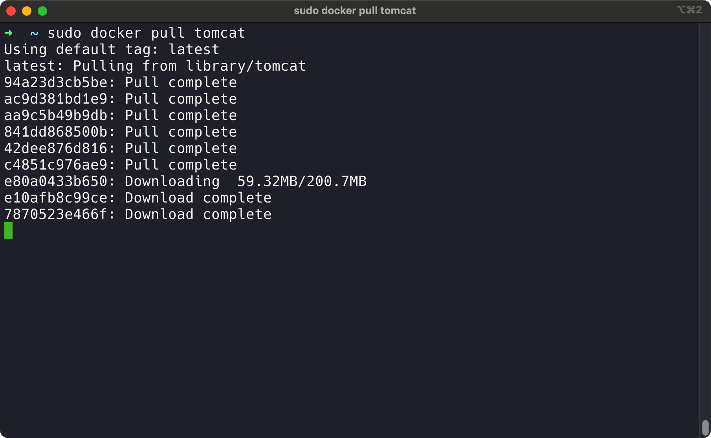
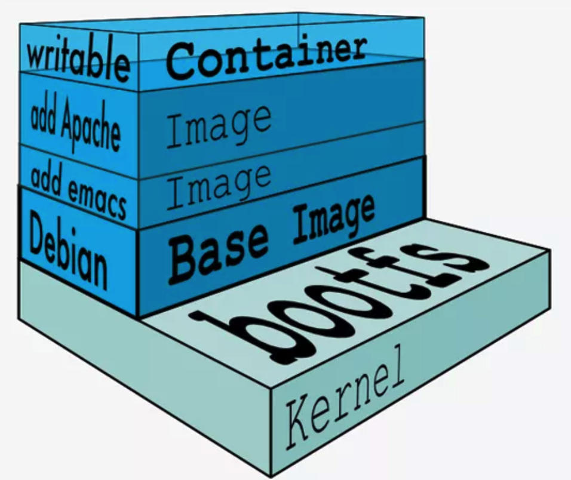
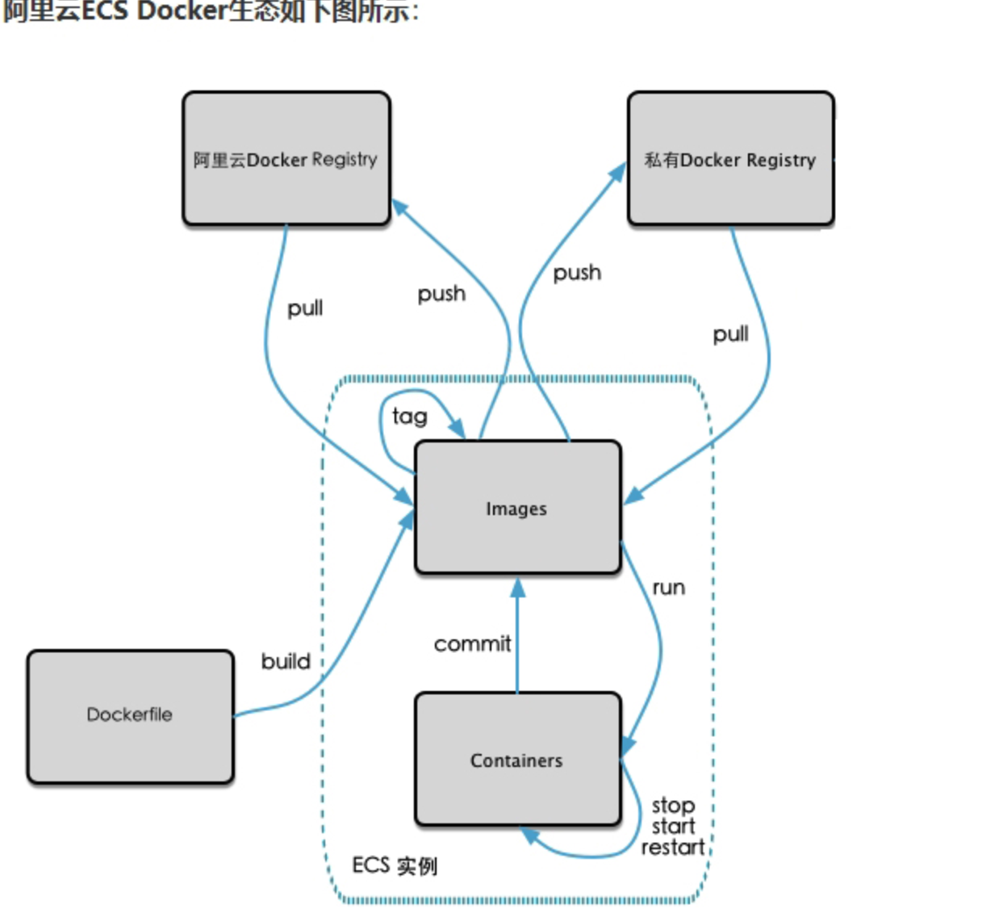
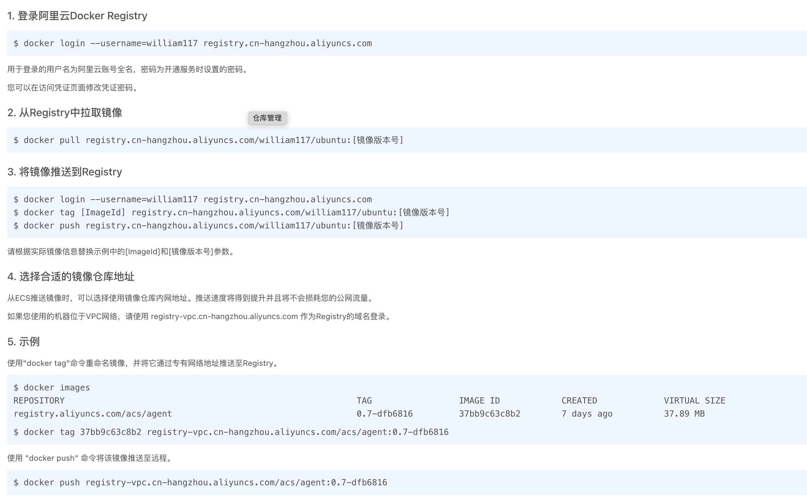
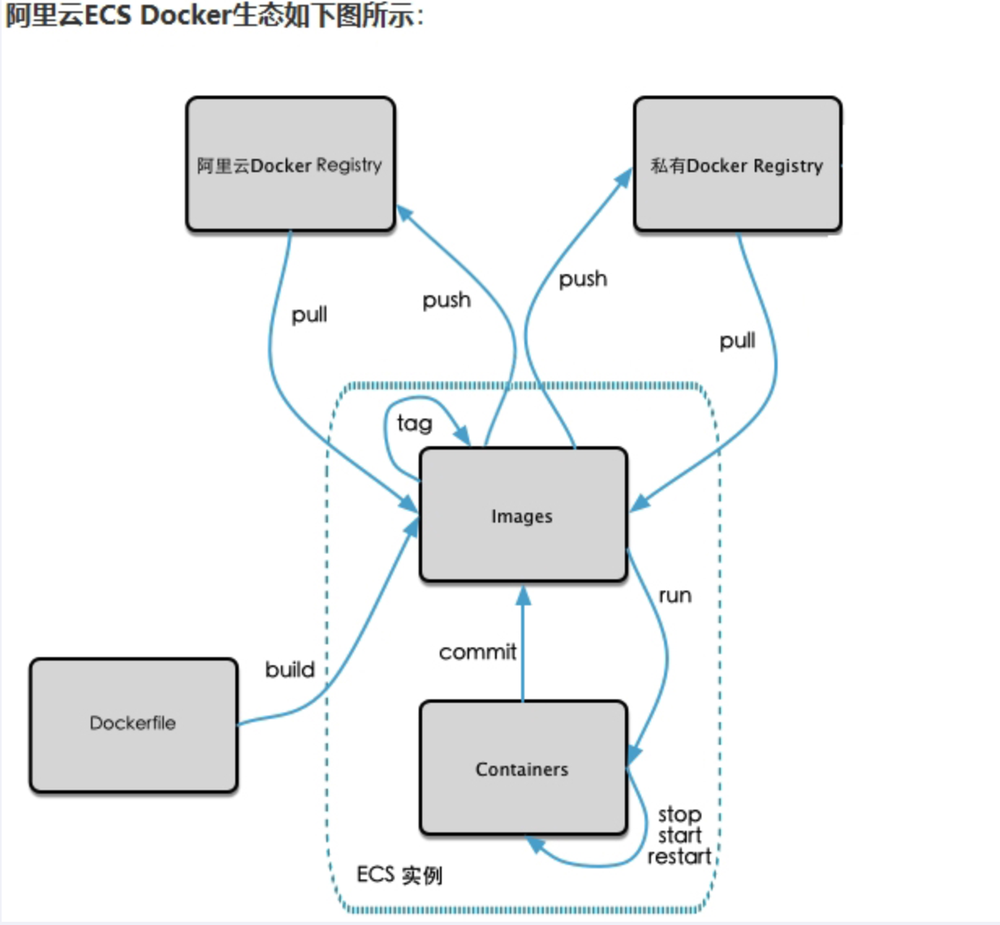
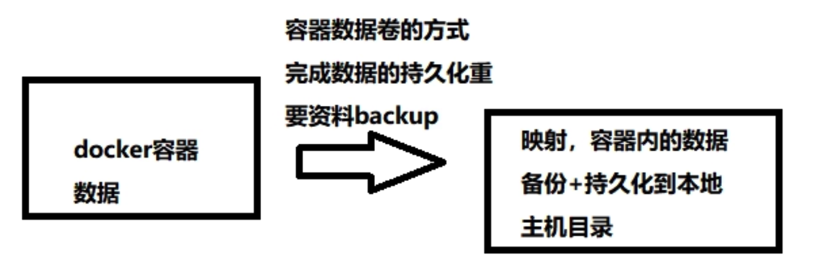

Docker的基本组成
镜像（image）
Docker镜像（Image）就是一个只读的模板。镜像可以用来创建Docker容器，一个镜像可以创建很多容器。
它也相当于一个root文件系统。比如官方镜像CentOs:7就包含了一套CentOs:7最小系统的root文件系统。
相当于容器的“源代码”，docker镜像文件类似于Java的类模板，而docker容器实例类似于Java中new出来的实例对象。
容器（container）
从面向对象角度
Docker利用容器（Container）独立运行的一个或一组应用，应用程序或服务运行在容器里面，容器就类似于一个虚拟化的运行环境，容器就是用镜像创建的运行实例。就像是Java中的类和实例对象一样，镜像是静态的定义，容器是镜像运行时的实体。容器为镜像提供了一个标准的和隔离的运行环境，它可以被启动、开始、停止、删除。每个容器都是相互隔离的、保证安全的平台。
从镜像容器角度
可以把容器看做是一个简易版的Linux环境（包括root用户权限、进程空间、用户空间和网络空间等）和运行在其中的应用程序。
仓库（Repository）
仓库（Repository）是集中存放镜像文件的场所。
类似于 Maven 仓库，存放各种 jar 包的地方；
GitHub 仓库，存放各种 git 项目的地方；
Docker 公司提供的官方 registry 被称为 Docker Hub，存放各种进项模板的地方。
仓库分为公开仓库（Public）和私有仓库（Private）两种形式。
最大的公开仓库是 Docker Hub(https://hub.docker.com/)，存放了数量庞大的镜像供用户下载。国内的公开仓库包括阿里云 、网易云等。
总结
需要正确的理解仓库/镜像/容器这几个概念:
Docker
- 本身是一个容器运行载体或称之为管理引擎。我们把应用程序和配置依赖打包好形成一个可交付的运行环境，这个打包好的运行环境就是image镜像文件。只有通过这个镜像文件才能生成Docker容器实例(类似Java中new出来一个对象)。
Image
- 文件可以看作是容器的模板。Docker 根据 image 文件生成容器的实例。同一个 image 文件，可以生成多个同时运行的容器实例。
镜像文件
- image 文件生成的容器实例，本身也是一个文件，称为镜像文件。
容器实例
- 一个容器运行一种服务，当我们需要的时候，就可以通过docker客户端创建一个对应的运行实例，也就是我们的容器
仓库
- 就是放一堆镜像的地方，我们可以把镜像发布到仓库中，需要的时候再从仓库中拉下来就可以了。
Docker常用命令
帮助启动类命令
1 | # 启动docker |
镜像命令
docker images：列出本地主机上的镜像1
2-a：列出本地所有的镜像（含历史映像层）
-q：只显示镜像IDdocker search 某个xxx镜像名字：1
2
3
4
5
6# 命令
docker search [options] 镜像名字
# options说明
--limit：只列出N个镜像，默认25个
docker search --limit 5 redisdocker pull 某个xxx镜像名字：下载镜像1
2
3
4
5
6# 写法1：+TAG 镜像版本号
docker pull 镜像名字[:TAG]
# 例如：docker pull redis:6.0.8
# 写法2：下载最新版latest
docker pull 镜像名字docker system df：查看镜像、容器、数据卷所占空间1
2
3
4
5
6
7
8
9
10
11$ docker system df
TYPE TOTAL ACTIVE SIZE RECLAIMABLE
Images 1 1 9.136kB 0B (0%)
Containers 2 0 0B 0B
Local Volumes 0 0 0B 0B
Build Cache 0 0 0B 0B
# Images 镜像有几个
# Containers 容器有几个
# Local Volumes 本地卷
# Build Cache 构建的缓存docker rmi 某个xxx镜像名字ID：删除镜像1
2
3
4
5
6
7
8
9
10
11-f 强制删除
# 删除单个镜像
docker rmi -f 镜像ID
# 删除多个镜像
docker rmi -f 镜像名1:TAG 镜像名2:TAG
# 删除全部
docker rmi -f $(docker images -qa)
# $() 引用命令
问题：docker虚悬镜像是什么？
仓库名、标签都是
的镜像，俗称虚悬镜像 dangling image，工作中没有什么用，建议删除。1
2
3docker images
REPOSITORY TAG IMAGE ID CREATED SIZE
<none> <none> 18e5af790473 9 months ago 9.14kB
容器命令
新建+启动容器
docker run [OPTIONS] IMAGE [COMMAND] [ARG]1
2
3
4
5
6
7
8
9
10# options 说明
--name="容器新名字" 为容器指定一个名称
-d: 后台运行容器并返回容器ID，即启动守护式容器（后台运行）
-i: 以交互模式运行容器，通常与-t同时使用
-t：为容器重新分配一个伪输入终端，通常与-同时使用
即启动交互式容器（前台有伪终端，等待交互），退出终端输入：exit
-P：随机端口映射
-p：指定端口映射1
2
3
4
5
6
7
8# 使用镜像ubuntu:latest 以交互模式启动一个容器，在容器内执行bash命令
$ sudo docker run -it ubuntu bash
root@908d43950860:/# ps -ef
UID PID PPID C STIME TTY TIME CMD
root 1 0 0 13:00 pts/0 00:00:00 bash
root 9 1 0 13:00 pts/0 00:00:00 ps -ef
root@908d43950860:/# exit
exit列出当前所有正在运行的容器
docker ps [OPTIONS]1
2
3
4
5# options 说明
-a：列出当前所有正在运行的容器+历史上运行过的
-l：显示最近创建的容器
-n：显示最近n个创建的容器
-q：静默模式，只显示容器编号1
2
3
4
5
6
7
8
9
10
11
12
13$ sudo docker run -it --name=myyu1 ubuntu bash
root@96e714997794:/#
$ sudo docker ps
CONTAINER ID IMAGE COMMAND CREATED STATUS PORTS NAMES
96e714997794 ubuntu "bash" 45 seconds ago Up 45 seconds myyu1
# CONTAINER ID 容器名
# IMAGE 镜像名
# COMMAND 运行的命令
# CREATED 运行时间
# PORTS 暴露端口号
# NAMES 名称退出容器
exit：run进入容器，exit退出，容器会停止ctrl+p+q：run进入容器，ctrl+p+q退出，容器不会停止启动已停止运行的容器
docker start 容器ID或容器名重启容器
docker restart 容器ID或容器名停止容器
docker stop 容器ID或容器名强制停止容器
docker kill 容器ID或容器名删除已停止的容器
docker rm 容器ID一次性删除多个容器实例
docker rm -f $(docker ps -aq)或者docker ps -aq | xargs docker rm
重要
启动守护式容器（后台服务器）
docker run -d 容器名
注意
使用镜像ubuntu:lates以后台启动一个容器
sudo docker run -d ubuntu
问题：使用sudo docker ps -a 进行查看，发现容器已经退出
很重要说明一点：Docker容器后台运行，就必须有一个前台进程
容器运行的命令如果不是那些一直挂起的命令（比如运行top、tail），就是会自动退出的
这个是Docker的机制问题，比如你的web容器，我们以nginx为例，正常情况下：
我们配置启动服务只需要启动响应的service即可，例如service nginx start
但是，这样做 nginx 为后台进程模式运行，就导致docker前台没有运行的应用。
这样的容器后台启动后，会立即自杀因为他觉得他无事可做了
所以，最佳的解决方案是：**将你要运行的程序以前台进程的形式运行，常见就是命令行模式，表示还有交互操作，别中断。**
查看容器日志
docker logs 容器ID
查看容器内部运行的进程
docker top 容器ID
查看容器内部细节
docker inspect 容器ID
进入正在运行的容器并以命令行交互
docker exec -it 容器ID /bin/bash 推荐使用
重新进入 docker attach 容器ID
上述两个区别：
attach 直接进入容器启动命令的终端，不会启动新的进程，用exit退出，会导致容器停止。
exec 是在容器中打开新的终端，并且可以启动新的进程，用exit退出，不会导致容器停止。
从容器内拷贝文件到主机上
docker cp 容器ID:容器内路径 目的主机路径
导入和导出容器
- export 导出容器的内容留作为一个tar归档文件 [对应import命令]
- import 从tar包中的内容创建一个新的文件系统再导入为镜像 [对应export]
案例
export
docker export 容器ID > 文件名.tar
1 | $ pwd |
import
cat 文件名.tar | docker import - 镜像用户/镜像名:镜像版本号
1 | # cat 文件名.tar | docker import - 镜像用户/镜像名:镜像版本号 |
小总结-常用命令
1 | attach Attach to a running container # 当前 shell 下 attach 连接指定运行镜像 |
Docker镜像
是什么
镜像是分层的
以我们的pull为例，在下载的过程中我们可以看到docker的镜像好像是在一层一层下载

UnionFS（联合文件系统）
Union文件系统（UnionFS）是一种分层、轻量级并且高性能的文件系统，他支持对文件系统的修改作为一次提交来一层层的叠加，同时可以将不同目录挂载到同一个虚拟文件系统下（unite several disectories into a single virtual filesystem）Union文件系统是Docker镜像的基础。镜像可以通过分层来进行继承，基于基础镜像（没有父镜像），可以制作各种具体的应用镜像。
特性：一次同时加载多个文件系统，但从外面看起来，只能看到一个文件系统，联合加载会把各层文件系统叠加起来，这样最终的文件系统会包含所有底层的文件和目录。
Docker镜像加载原理
Docker的镜像实际上由一层一层的文件系统组成，这种层级的文件系统UnionFS。
bootfs(boot file system)主要包含bootloader和kernel, bootloader主要是引导加载kernel, Linux刚启动时会加载bootfs文件系统，在Docker镜像的最底层是引导文件系统bootfs。这一层与我们典型的Linux/Unix系统是一样的，包含boot加载器和内核。当boot加载完成之后整个内核就都在内存中了，此时内存的使用权已由bootfs转交给内核，此时系统也会卸载bootfs。
rootfs (root file system) ，在bootfs之上。包含的就是典型 Linux 系统中的 /dev, /proc, /bin, /etc 等标准目录和文件。rootfs就是各种不同的操作系统发行版，比如Ubuntu，Centos等等。
问题：平时我们安装进虚拟机的CentOS都是好几个G，为什么docker这里才200M？？
对于一个精简的OS，rootfs可以很小，只需要包括最基本的命令、工具和程序库就可以了，因为底层直接用Host的kernel，自己只需要提供 rootfs 就行了。由此可见对于不同的linux发行版, bootfs基本是一致的, rootfs会有差别, 因此不同的发行版可以公用bootfs。
Docker为什么要采用这种分层结构？
镜像分层最大的一个好处就是共享资源，方便复制迁移，就是为了复用。
比如说多个镜像都从相同的base镜像构建而来，那么Docker Host只需要在磁盘上保存同时，内存也只需加载一份base镜像，就可以为所有容器服务了。而且镜像的每一层都可以被共享。
Docker分层重要理解
Docker镜像层都是只读的，容器层是可写的。
当容器启动时，一个新的可写层被加载到镜像的顶部。这一层通常被称作“容器层”，“容器层”之下的都被叫镜像层。
所以，对容器的改动——无论添加、删除、还是修改文件都只会发成在容器层中。只有容器层是可写的，容器层下面的所有镜像层都只是可读的。

Docker镜像commit操作案例
- docker commit 提交容器副本使之称为一个新的镜像
docker commit -m="提交的描述信息" -a="作者" 容器ID 要创建的目标镜像名:[标签名]
案例演示：ubunt容器安装vim
- 从Hub上下载ubuntu镜像到本地并成功运行
- 原始的默认ubuntu镜像不带vim命令
- 外网连通的情况下，安装vim
- 安装完成后，commit我们自己的新镜像
- 启动我们的镜像并和原来的对比
1 | [william@arch ~]$ sudo docker run -it ubuntu /bin/bash |
本地镜像发布到阿里云
本地镜像发布到阿里云流程

镜像的生成方法
1 | # 1.commit方法 |
将本地镜像推送到阿里云
创建仓库镜像
选择个人实例
命名空间
仓库名称
进入管理界面获得脚本

将镜像推送到阿里云
1 | $ sudo docker images |
将阿里云上的镜像下载到本地
sudo docker pull registry.cn-hangzhou.aliyuncs.com/william117/ubuntu:[镜像版本号]
1 | $ sudo docker pull registry.cn-hangzhou.aliyuncs.com/william117/ubuntu:1.1 |
本地镜像发布到私有库
本地镜像发布到私有库流程

私有库是什么
Docker Registry是官方提供的工具，可以用于构建私有镜像仓库
官方Docker Hub地址：https://hub.docker.com/，中国大陆访问太慢了且准备被阿里云取代的趋势，不太主流。
Dockerhub、阿里云这样的公共镜像仓库可能不太方便，涉及机密的公司不可能提供镜像给公网，所以需要创建一个本地私人仓库供给团队使用，基于公司内部项目构建镜像。
将本地镜像推送到私有库
下载镜像Docker Registry
1
2
3
4
5
6
7
8
9
10
11
12
13
14
15
16
17
18
19
20william@william-ARM-Ubuntu:~$ sudo docker pull registry
Using default tag: latest
latest: Pulling from library/registry
b48a9fe99aba: Pull complete
095878aa44ca: Pull complete
04df0d597e2b: Pull complete
e0594d0cd6d6: Pull complete
94a758d8738a: Pull complete
Digest: sha256:169211e20e2f2d5d115674681eb79d21a217b296b43374b8e39f97fcf866b375
Status: Downloaded newer image for registry:latest
docker.io/library/registry:latest
william@william-ARM-Ubuntu:~$ sudo docker images
REPOSITORY TAG IMAGE ID CREATED SIZE
registry.cn-hangzhou.aliyuncs.com/william117/ubuntu 1.1 7c0e2d4866ee 11 days ago 161MB
redis latest 97772dcef71b 2 weeks ago 111MB
ubuntu latest a7870fd478f4 7 weeks ago 69.2MB
tomcat latest b64abfdee99c 7 months ago 668MB
registry latest 11bf57bb5c31 8 months ago 24.5MB
redis 6.0.8 d4deb73856a2 21 months ago 98.5MB运行私有库Registry，相当于本地有个私有的Docker Hub
1
2
3
4
5
6
7# 默认情况下，仓库被创建在容器的/var/lib/registry目录下，建议自行用容器卷映射，方便与宿主机联调
william@william-ARM-Ubuntu:~$ sudo docker run -d -p 5000:5000 -v /home/william/myregistry/:/home/test --privileged=true registry
7a74ca4f7bc3bde701d7921c861bd4f799c6e6255e9aa661127bfda1d09b7977
william@william-ARM-Ubuntu:~/DYJ/myregistry$ sudo docker ps
CONTAINER ID IMAGE COMMAND CREATED STATUS PORTS NAMES
7a74ca4f7bc3 registry "/entrypoint.sh /etc…" 16 seconds ago Up 16 seconds 0.0.0.0:5000->5000/tcp, :::5000->5000/tcp mystifying_joliot案例演示创建一个新镜像，ubuntu安装ifconfig命令
1
2
3
4
5
6
7
8
9
10
11
12
13
14
15
16
17
18
19
20
21
22
23
24
25
26
27
28
29
30
31
32
33
34
35
36
37
38
39
40
41
42
43
44
45
46
47
48
49
50
51
52
53
54
55
56
57
58
59
60
61
62
63
64
65
66
67
68
69
70
71
72
73
74
75
76
77
78
79
80
81
82# 运行ubuntu
william@william-ARM-Ubuntu:~$ sudo docker run -it ubuntu /bin/bash
# ubuntu容器执行ifconfig命令，发现并没有该命令
root@db6c8a0b2695:/# ifconfig
bash: ifconfig: command not found
# 更新ubuntu容器源
root@db6c8a0b2695:/# apt update
Get:1 http://ports.ubuntu.com/ubuntu-ports jammy InRelease [270 kB]
Get:2 http://ports.ubuntu.com/ubuntu-ports jammy-updates InRelease [114 kB]
Get:3 http://ports.ubuntu.com/ubuntu-ports jammy-backports InRelease [99.8 kB]
Get:4 http://ports.ubuntu.com/ubuntu-ports jammy-security InRelease [110 kB]
Get:5 http://ports.ubuntu.com/ubuntu-ports jammy/main arm64 Packages [1758 kB]
Get:6 http://ports.ubuntu.com/ubuntu-ports jammy/restricted arm64 Packages [24.2 kB]
Get:7 http://ports.ubuntu.com/ubuntu-ports jammy/universe arm64 Packages [17.2 MB]
Get:8 http://ports.ubuntu.com/ubuntu-ports jammy/multiverse arm64 Packages [224 kB]
Get:9 http://ports.ubuntu.com/ubuntu-ports jammy-updates/restricted arm64 Packages [81.1 kB]
Get:10 http://ports.ubuntu.com/ubuntu-ports jammy-updates/universe arm64 Packages [234 kB]
Get:11 http://ports.ubuntu.com/ubuntu-ports jammy-updates/main arm64 Packages [580 kB]
Get:12 http://ports.ubuntu.com/ubuntu-ports jammy-updates/multiverse arm64 Packages [1250 B]
Get:13 http://ports.ubuntu.com/ubuntu-ports jammy-backports/universe arm64 Packages [5812 B]
Get:14 http://ports.ubuntu.com/ubuntu-ports jammy-security/universe arm64 Packages [108 kB]
Get:15 http://ports.ubuntu.com/ubuntu-ports jammy-security/restricted arm64 Packages [61.7 kB]
Get:16 http://ports.ubuntu.com/ubuntu-ports jammy-security/main arm64 Packages [269 kB]
Fetched 21.2 MB in 1min 8s (310 kB/s)
Reading package lists... Done
Building dependency tree... Done
Reading state information... Done
16 packages can be upgraded. Run 'apt list --upgradable' to see them.
# ubuntu容器安装net-tools
root@db6c8a0b2695:/# apt install net-tools
Reading package lists... Done
Building dependency tree... Done
Reading state information... Done
The following NEW packages will be installed:
net-tools
0 upgraded, 1 newly installed, 0 to remove and 16 not upgraded.
Need to get 207 kB of archives.
After this operation, 774 kB of additional disk space will be used.
Get:1 http://ports.ubuntu.com/ubuntu-ports jammy/main arm64 net-tools arm64 1.60+git20181103.0eebece-1ubuntu5 [207 kB]
Fetched 207 kB in 5s (38.9 kB/s)
debconf: delaying package configuration, since apt-utils is not installed
Selecting previously unselected package net-tools.
(Reading database ... 4389 files and directories currently installed.)
Preparing to unpack .../net-tools_1.60+git20181103.0eebece-1ubuntu5_arm64.deb ...
Unpacking net-tools (1.60+git20181103.0eebece-1ubuntu5) ...
Setting up net-tools (1.60+git20181103.0eebece-1ubuntu5) ...
# ubuntu容器执行ifconfig命令
root@db6c8a0b2695:/# ifconfig
eth0: flags=4163<UP,BROADCAST,RUNNING,MULTICAST> mtu 1500
inet 172.17.0.2 netmask 255.255.0.0 broadcast 172.17.255.255
ether 02:42:ac:11:00:02 txqueuelen 0 (Ethernet)
RX packets 15090 bytes 22180068 (22.1 MB)
RX errors 0 dropped 0 overruns 0 frame 0
TX packets 3322 bytes 183806 (183.8 KB)
TX errors 0 dropped 0 overruns 0 carrier 0 collisions 0
lo: flags=73<UP,LOOPBACK,RUNNING> mtu 65536
inet 127.0.0.1 netmask 255.0.0.0
loop txqueuelen 1000 (Local Loopback)
RX packets 0 bytes 0 (0.0 B)
RX errors 0 dropped 0 overruns 0 frame 0
TX packets 0 bytes 0 (0.0 B)
TX errors 0 dropped 0 overruns 0 carrier 0 collisions 0
# 将该有net-tools工具的ubuntu镜像，创建成一个新的镜像
william@william-ARM-Ubuntu:~$ sudo docker commit -m="ifconfig cmd add" -a="william" db6c8a0b2695 ubuntu:1.2
sha256:07bca3d7c4a16461b32f57c09a306d9b597bb39c39d6f0dc7d2b1bc8489781f5
# 查看本地镜像仓库
william@william-ARM-Ubuntu:~$ sudo docker images
REPOSITORY TAG IMAGE ID CREATED SIZE
ubuntu 1.2 07bca3d7c4a1 8 seconds ago 104MB
registry.cn-hangzhou.aliyuncs.com/william117/ubuntu 1.1 7c0e2d4866ee 11 days ago 161MB
redis latest 97772dcef71b 2 weeks ago 111MB
ubuntu latest a7870fd478f4 7 weeks ago 69.2MB
tomcat latest b64abfdee99c 7 months ago 668MB
registry latest 11bf57bb5c31 8 months ago 24.5MB
redis 6.0.8 d4deb73856a2 21 months ago 98.5MBcurl验证私服库上有什么镜像
1
2
3
4
5
6
7william@william-ARM-Ubuntu:~$ sudo docker ps
CONTAINER ID IMAGE COMMAND CREATED STATUS PORTS NAMES
54549fde7be3 ubuntu "/bin/bash" 41 minutes ago Up 41 minutes cool_wilbur
7a74ca4f7bc3 registry "/entrypoint.sh /etc…" 42 minutes ago Up 42 minutes 0.0.0.0:5000->5000/tcp, :::5000->5000/tcp mystifying_joliot
william@william-ARM-Ubuntu:~$ curl -XGET http://10.211.55.3:5000/v2/_catalog
{"repositories":[]}将新镜像ubuntu:1.2修改符合私服规范的Tag
docker tag 镜像:Tag Host:Port/Repository:Tag1
2
3
4
5
6
7
8
9
10
11william@william-ARM-Ubuntu:~$ sudo docker tag ubuntu:1.2 10.211.55.3:5000/ubuntu:1.2
william@william-ARM-Ubuntu:~$ sudo docker images
REPOSITORY TAG IMAGE ID CREATED SIZE
10.211.55.3:5000/ubuntu 1.2 07bca3d7c4a1 25 hours ago 104MB
ubuntu 1.2 07bca3d7c4a1 25 hours ago 104MB
registry.cn-hangzhou.aliyuncs.com/william117/ubuntu 1.1 7c0e2d4866ee 12 days ago 161MB
redis latest 97772dcef71b 2 weeks ago 111MB
ubuntu latest a7870fd478f4 7 weeks ago 69.2MB
tomcat latest b64abfdee99c 7 months ago 668MB
registry latest 11bf57bb5c31 8 months ago 24.5MB
redis 6.0.8 d4deb73856a2 21 months ago 98.5MB修改配置文件使之支持http
Docker默认不允许http方式推送镜像。所以我们需要配置/etc/docker/daemon.json来取消限制
修改完后不生效，建议重启Docker。Docker重启后，所有Docker容器将会停止。
1
2
3
4
5
6
7
8
9
10
11
12
13
14
15william@william-ARM-Ubuntu:~$ cat /etc/docker/daemon.json
{
"registry-mirrors": ["https://lsq7tfu3.mirror.aliyuncs.com"]
}
# 上面是之前配置的阿里云镜像加速器，我们需要在阿里云镜像加速器下面写上"insecure-registries":["10.211.55.3:5000"]
william@william-ARM-Ubuntu:~$ cat /etc/docker/daemon.json
{
"registry-mirrors": ["https://lsq7tfu3.mirror.aliyuncs.com"],
"insecure-registries":["10.211.55.3:5000"]
}
# 重启Docker后需要重新运行私服仓库
william@william-ARM-Ubuntu:~$ sudo docker run -d -p 5000:5000 -v /home/william/DYJ/myregistry/:/home/test --privileged=true registry
3bbcd1f874b5bb2b2a3931d3dd77182d239a5a012dd0e54f58e5cb383701990cpush推送到私服库
1
2
3
4
5
6
7
8
9
10
11
12
13
14
15
16william@william-ARM-Ubuntu:~$ sudo docker push 10.211.55.3:5000/ubuntu:1.2
The push refers to repository [10.211.55.3:5000/ubuntu]
d53c1aceb6e1: Pushed
13e8c0db60e7: Pushed
1.2: digest: sha256:af7b0352137dcbe7c9ea4de6c4c9e438dd8bba885e6937ad1e97cd53a0fc1913 size: 741
william@william-ARM-Ubuntu:~$ sudo docker images
REPOSITORY TAG IMAGE ID CREATED SIZE
10.211.55.3:5000/ubuntu 1.2 07bca3d7c4a1 25 hours ago 104MB
ubuntu 1.2 07bca3d7c4a1 25 hours ago 104MB
registry.cn-hangzhou.aliyuncs.com/william117/ubuntu 1.1 7c0e2d4866ee 12 days ago 161MB
redis latest 97772dcef71b 2 weeks ago 111MB
ubuntu latest a7870fd478f4 7 weeks ago 69.2MB
tomcat latest b64abfdee99c 7 months ago 668MB
registry latest 11bf57bb5c31 8 months ago 24.5MB
redis 6.0.8 d4deb73856a2 21 months ago 98.5MB再次curl验证私服库上有什么镜像
1
2william@william-ARM-Ubuntu:~$ curl -XGET http://10.211.55.3:5000/v2/_catalog
{"repositories":["ubuntu"]}pull到本地并运行
1
2
3
4
5
6
7
8
9
10
11
12
13
14
15
16
17
18
19
20
21
22
23
24
25
26
27
28
29
30
31
32
33# 删除本地镜像以作验证
william@william-ARM-Ubuntu:~$ sudo docker rmi -f 10.211.55.3:5000/ubuntu:1.2
Untagged: 10.211.55.3:5000/ubuntu:1.2
Untagged: 10.211.55.3:5000/ubuntu@sha256:af7b0352137dcbe7c9ea4de6c4c9e438dd8bba885e6937ad1e97cd53a0fc1913
william@william-ARM-Ubuntu:~$ sudo docker rmi -f ubuntu:1.2
Untagged: ubuntu:1.2
Deleted: sha256:07bca3d7c4a16461b32f57c09a306d9b597bb39c39d6f0dc7d2b1bc8489781f5
Deleted: sha256:ad133ac82d25ca03ee07e8fb53055321eb9ef89b13ce9bbefa957cf90bf76454
# 查看docker镜像
william@william-ARM-Ubuntu:~$ sudo docker images
REPOSITORY TAG IMAGE ID CREATED SIZE
registry.cn-hangzhou.aliyuncs.com/william117/ubuntu 1.1 7c0e2d4866ee 12 days ago 161MB
redis latest 97772dcef71b 2 weeks ago 111MB
ubuntu latest a7870fd478f4 7 weeks ago 69.2MB
tomcat latest b64abfdee99c 7 months ago 668MB
registry latest 11bf57bb5c31 8 months ago 24.5MB
redis 6.0.8 d4deb73856a2 21 months ago 98.5MB
# 从私服库拉取ubuntu镜像，注意Tag号要带上
william@william-ARM-Ubuntu:~$ sudo docker pull 10.211.55.3:5000/ubuntu:1.2
1.2: Pulling from ubuntu
ed02c6ade914: Already exists
07b9b2314dd0: Pull complete
Digest: sha256:af7b0352137dcbe7c9ea4de6c4c9e438dd8bba885e6937ad1e97cd53a0fc1913
Status: Downloaded newer image for 10.211.55.3:5000/ubuntu:1.2
10.211.55.3:5000/ubuntu:1.2
# 如果忘记了版本号，可以通过curl http://仓库IP:5000/v2/镜像名称/tags/list 查看
william@william-ARM-Ubuntu:/etc/docker$ curl http://10.211.55.3:5000/v2/ubuntu/tags/list
{"name":"ubuntu","tags":["1.2"]}
Docker容器数据卷
坑：容器卷记得加入 [–privilege=true]
为什么要开启权限
Docker挂载主机目录访问如果出现cannot open directory .: Permission denied
解决办法：在挂载目录后多加一个–privilege=true参数即可
如果是CentOS7安全模块会比之前系统版本加强，不安全的会先禁止，所以目录挂载的情况被默认为不安全的行为。
在SELinux里面挂载目录被禁止掉了，如果要开启，我们一般使用–privilege=true命令，扩大容器的权限解决挂载目录没有权限的问题，也即使用该参数，container内的root拥有真正的root权限，否则，container内的root只是外部的一个普通用户权限。
回顾 [本地镜像发布到私有库，参数V]
1 | william@william-ARM-Ubuntu:~$ sudo docker run -d -p 5000:5000 -v /william/myregistry/:/tmp/registry --privileged=true registry |
什么是容器数据卷
Docker容器数据卷，即Docker Volume（卷）
当Docker容器运行的时候，会产生一些列的数据文件，这些数据文件会在关闭Docker容器时，直接消失的。但是其中产生部分的数据内容，我们是希望能够把它给保存起来，另做它用的。
关闭Docker容器=删除内部除了image底层数据的其他全部内容，即删库跑路
所以我们期望：
- 将应用于运行的环境打包形成容器运行，伴随着容器运行产生的数据，我们希望这些数据能够持久化。
- 希望容器之间也能够实现数据的共享
Docker容器产生的数据同步到本地，这样关闭容器的时候，数据是在本地的，不会影响数据的安全性。
Docker的容器卷技术也就是将容器内部目录和本地目录进行一个同步，即挂载。
总结：容器的持久化和同步化操作，容器之间也是可以数据共享的（但是注意挂载不是等于同步！！！）
卷就是目录或文件，存在于一个或多个容器中，由docker挂载到容器，但补数据联合文件系统，因此能够绕过Union File System提供一些用于持续存储或共享数据的特性：
卷的设计目的就是数据的持久化，完全独立于容器的生存周期，因此Docker不会在容器删除时删除其挂载的数据卷。
一句话：有点类似我们Redis里面的rdb和aof文件
将docker容器内的数据保存进宿主机的磁盘中
运行一个带有容器卷存储功能的容器实例
docker run -it --privileged=true -v /宿主机绝对路径目录: /容器内目录 镜像名
容器数据卷能干嘛
将docker容器内的数据保存进宿主机的磁盘中，完成敏感数据和重要数据的持久化和备份
Docker容器产生的数据，如果不备份，那么当容器实例删除后，容器内的数据自然也就没有了。为了能保存数据在Docker中我们使用卷。
特点:
数据卷可在容器之间共享或重用数据
卷中的更改可以直接生效
- 相较于docker cp更方便
数据卷中的更改不会包含在镜像的更新中
数据卷的生命周期一直持续到没有容器使用为止

数据卷案例
宿主 vs 容器之间映射添加容器卷
直接添加命令
命令
查看容器卷：
sudo docker volume lssudo docker run -it --privileged=true -v /宿主机绝对路径目录:/容器内目录 镜像名1
william@william-ARM-Ubuntu:~$ sudo docker run -it -v /home/william/DYJ/myregistry/:/home/test ubuntu /bin/bash
查看数据卷是否挂载成功
1
2root@27776923a655:~# cd /home/test
root@27776923a655:/home/test# touch hello.txtdocker inspect 容器ID将容器的版本、属性信息以Json串的形式暴露1
2
3
4
5
6
7
8
9
10
11
12
13
14
15
16
17william@william-ARM-Ubuntu:~/DYJ/myregistry$ sudo docker ps
CONTAINER ID IMAGE COMMAND CREATED STATUS PORTS NAMES
27776923a655 ubuntu "/bin/bash" 18 hours ago Up 18 hours tender_kilby
william@william-ARM-Ubuntu:~/DYJ/myregistry$ sudo docker inspect 27776923a655
...
"Mounts": [
{
"Type": "bind",
"Source": "/home/william/DYJ/myregistry",
"Destination": "/home/test",
"Mode": "",
"RW": true,
"Propagation": "rprivate"
}
],
...容器和宿主机之间数据共享
1
2
3
4william@william-ARM-Ubuntu:~/DYJ/myregistry$ pwd
/home/william/DYJ/myregistry
william@william-ARM-Ubuntu:~/DYJ/myregistry$ ls
hello.txt
读写规则映射添加说明
读写（默认）
sudo docker run -it --privileged=true -v /宿主机绝对路径目录:/容器内目录:rw 镜像名- 默认同上案例，默认就是rw
只读
- 容器实例内部被限制，只能读取不能写
- 如果此时宿主机写入内容，可以同步给容器内，容器可以读取到
sudo docker run -it --privileged=true -v /宿主机绝对路径目录:/容器内目录:ro 镜像名- ro = read only
1
2
3
4
5
6
7william@william-ARM-Ubuntu:~/DYJ/myregistry$ sudo docker run -it --privileged=true -v /home/william/DYJ/myregistry:/home/test:ro ubuntu
[sudo] password for william:
root@97b22f619d7d:/# cd /home/test/
root@97b22f619d7d:/home/test# ls
1.txt 2.txt 3.txt hello.txt
root@97b22f619d7d:/home/test# touch 4.txt
touch: cannot touch '4.txt': Read-only file system
卷的继承和共享
容器1完成和宿主机的映射
1
william@william-ARM-Ubuntu:~/DYJ/myregistry$ sudo docker run -it --privileged=true -v /home/william/DYJ/myregistry:/home/test --name tender_kilby ubuntu
容器2继承容器1的卷规则
docker run -it --privileged=true --volumes-from 父类 --name u2 ubuntu- 父类为要u2容器继承的容器名称
1
2
3
4
5
6
7
8william@william-ARM-Ubuntu:~/DYJ/myregistry$ docker run -it --privileged=true --volumes-from u1 --name u2 ubuntu
william@william-ARM-Ubuntu:~/DYJ/myregistry$ sudo docker run -it --privileged=true --volumes-from tender_kilby --name u2 ubuntu
root@20699ce4cbc1:/# cd /home/test/
root@20699ce4cbc1:/home/test# ls
1.txt 2.txt 3.txt hello.txt- 容器1停止后，容器2还会和宿主机挂载同样的路径
- 容器1恢复后，会同步容器2和宿主机的文件
Docker常规安装简介
总体步骤
- 搜索镜像
- 拉去镜像
- 查看镜像
- 启动镜像
- 停止容器
- 移除容器
安装 tomcat
docker hub上查找镜像
或者使用命令
docker search tomcat从docker hub上拉取tomcat镜像到本地
docker pull tomcatdocker images查看是否有拉取到的tomcat
docker images tomcat使用tomcat镜像创建容器实例（也叫运行镜像）
docker run -it -p 8080:8080 tomcat- -p 小写，主机端口:docker容器端口
- -P 大写，随机分配端口
- -i 交互
- -t 终端
- -d 后台
通过-P进行演示：主机端口为49153映射到tomcat容器端口8080
1
2
3
4
5
6
7[william@arch ~]$ sudo docker run -it -P tomcat
...
[william@arch ~]$ sudo docker ps
CONTAINER ID IMAGE COMMAND CREATED STATUS PORTS NAMES
22747fb85b75 tomcat "catalina.sh run" 22 hours ago Up 22 hours 0.0.0.0:49153->8080/tcp, :::49153->8080/tcp lucid_mccarthy访问tomcat首页
问题：访问 192.168.80.130:49153 出现 404 错误
解决方法：
- 可能没有映射端口或者没有关闭防火墙
- 把 webapps.dist 目录换成 webapps
1
2
3
4
5
6
7
8
9
10
11
12
13# 查看tomcat容器ID
[william@arch ~]$ sudo docker ps
CONTAINER ID IMAGE COMMAND CREATED STATUS PORTS NAMES
22747fb85b75 tomcat "catalina.sh run" 22 hours ago Up 22 hours 0.0.0.0:49153->8080/tcp, :::49153->8080/tcp lucid_mccarthy
# 进入该容器
[william@arch ~]$ sudo docker exec -it 22747fb85b75 /bin/bash
# 删除/usr/local/tomcat 目录下的webapps目录
root@22747fb85b75:/usr/local/tomcat# rm -rf webapps
# 将webapps.dist更改为webapps
root@22747fb85b75:/usr/local/tomcat# mv webapps.dist/ webapps
免修改版说明
安装tomcat8
docker pull billygoo/tomcat8-jdk8运行tomcat8
docker run -d -p 8080:8080 --name mytomcat8 billygoo/tomcat8-jdk8
安装mysql
docker hub 上面查找mysql镜像
或者
docker search mysql从docker hub上（阿里云加速器）拉去mysql镜像到本地标签为5.7
docker pull mysql:5.7使用mysql5.7镜像创建容器（也叫运行镜像）
使用命令出处 hub.docker.com/_/mysql
docker run --name some-mysql -e MYSQL_ROOT_PASSWORD=my-secret-pw -d mysql:tagdocker启动的端口号，可能被主机占用了，导致docker起不来
进入mysql
docker exec -it some-mysql /bin/bashmysql -uroot -p简单版（不推荐）
建库、建表插入数据
1
2
3
4
5
6
7
8
9
10
11mysql> create database db01;
Query OK, 1 row affected (0.00 sec)
mysql> use db01;
Database changed
mysql> create table aa(id int,name varchar(20));
Query OK, 0 rows affected (0.02 sec)
mysql> insert into aa values(1,'z3');
Query OK, 1 row affected (0.02 sec)外部Win11连接运行在docker上的mysql容器实例服务
问题
插入中文数据时报错：
docker上默认字符集编码隐患
1
2
3
4
5
6
7
8
9
10
11
12
13
14mysql> SHOW VARIABLES LIKE 'character%';
+--------------------------+----------------------------+
| Variable_name | Value |
+--------------------------+----------------------------+
| character_set_client | latin1 |
| character_set_connection | latin1 |
| character_set_database | latin1 |
| character_set_filesystem | binary |
| character_set_results | latin1 |
| character_set_server | latin1 |
| character_set_system | utf8 |
| character_sets_dir | /usr/share/mysql/charsets/ |
+--------------------------+----------------------------+
8 rows in set (0.00 sec)删除容器后，里面的mysql数据怎么办？
删除后就该跑路了
实战版
新建mysql容器实例
1
[william@arch ~]$ docker run -d -p 3306:3306 --privileged=true -v /home/william/DYJ/docker/mysql/log:/var/log/mysql -v /home/william/DYJ/docker/mysql/data:/var/lib/mysql -v /home/william/DYJ/docker/mysql/conf:/etc/mysql/conf.d -e MYSQL_ROOT_PASSWORD=123456 --name mysql mysql:5.7
记录一次启动mysql失败的问题
1
2
3
4
5
6
7
8
9
10
11
12
13
14
15
16[william@arch ~]$ sudo docker run -d -P --privileged=true -v /home/william/DYJ/docker/mysql/log:/var/log/mysql -v /home/william/DYJ/docker/mysql/data:/var/lib/mysql -v /home/william/DYJ/docker/mysql/conf:/etc/mysql/conf.d -e MYSQL_ROOT_PASSWORD=123456 --name mysql1 mysql:5.7
docker: Error response from daemon: Conflict. The container name "/mysql1" is already in use by container "2651888e8211ebe53a49bdea5c8ea8a3a41b08d83cea5d92ac8ba509830b1610". You have to remove (or rename) that container to be able to reuse that name.
See 'docker run --help'.
# 提示这个容器已经被使用，必须删除或者重命名才能使用该容器。如果我们使用docker ps 会发现下面更本没有容器
[william@arch ~]$ sudo docker ps
CONTAINER ID IMAGE COMMAND CREATED STATUS PORTS NAMES
# 使用docker ps -l 则会显示最新创建的容器包括所有状态
[william@arch ~]$ sudo docker ps -l
CONTAINER ID IMAGE COMMAND CREATED STATUS PORTS NAMES
2651888e8211 mysql:5.7 "docker-entrypoint.s…" 7 minutes ago Created mysql1
# 删除后便可启动
[william@arch ~]$ sudo docker rm 2651888e8211新建my.cnf
1
2
3
4
5
6
7
8
9
10[william@arch conf]$ cd /home/william/DYJ/docker/mysql/conf
[william@arch conf]$ vim my.cnf
[william@arch conf]$ cat my.cnf
[client]
default_character_set=utf8
[mysqld]
collation_server=utf8_general_ci
character_set_server=utf8重新启动mysql容器实例，再重新进入并查看字符编码
1
2
3
4
5
6
7
8
9
10
11
12
13
14
15
16
17
18
19
20
21
22
23
24
25
26
27
28
29
30[william@arch conf]$ sudo docker ps
CONTAINER ID IMAGE COMMAND CREATED STATUS PORTS NAMES
75eba7aaa729 mysql:5.7 "docker-entrypoint.s…" 6 minutes ago Up 6 minutes 0.0.0.0:49155->3306/tcp, :::49155->3306/tcp, 0.0.0.0:49154->33060/tcp, :::49154->33060/tcp mysql1
22747fb85b75 tomcat "catalina.sh run" 29 hours ago Up 29 hours 0.0.0.0:49153->8080/tcp, :::49153->8080/tcp lucid_mccarthy
57a82b1d18d4 ubuntu "/bin/bash" 2 weeks ago Up 2 weeks busy_jennings
[william@arch conf]$ sudo docker restart 75eba7aaa729
75eba7aaa729
[william@arch conf]$ sudo docker exec -it 75eba7aaa729 bash
bash-4.2# mysql -uroot -p
Enter password:
Welcome to the MySQL monitor. Commands end with ; or \g.
Your MySQL connection id is 2
Server version: 5.7.39 MySQL Community Server (GPL)
mysql> show variables like 'character%';
+--------------------------+----------------------------+
| Variable_name | Value |
+--------------------------+----------------------------+
| character_set_client | utf8 |
| character_set_connection | utf8 |
| character_set_database | utf8 |
| character_set_filesystem | binary |
| character_set_results | utf8 |
| character_set_server | utf8 |
| character_set_system | utf8 |
| character_sets_dir | /usr/share/mysql/charsets/ |
+--------------------------+----------------------------+
8 rows in set (0.00 sec)新建库新建表，再插入中文测试
1
2
3
4
5
6
7
8
9
10
11
12
13
14
15
16
17
18
19
20
21mysql> create database db01;
Query OK, 1 row affected (0.00 sec)
mysql> use db01;
Database changed
mysql> create table bb(id int,name varchar(20));
Query OK, 0 rows affected (0.00 sec)
# 没法打中文的话，就远程连接
mysql> GRANT ALL ON *.* TO user@'%' IDENTIFIED BY '123456' WITH GRANT OPTION;
mysql> insert into bb values(1,'张三');
mysql> select * from bb;
+------+--------+
| id | name |
+------+--------+
| 1 | 张三 |
+------+--------+
1 row in set (0.00 sec)结论：
- docker安装完MySQL并run出容器后，建议请先修改完字符集编码后，再新建mysql库-表-插入数据
- 数据库最好指定端口号，不要使用-P
假如将当前容器实例删除，再重来一次，之前建的db01实例还有吗？
依然存在
安装redis
从docker hub上（阿里云加速器）拉取redis镜像到本地标签为6.0.8
或者
docker pull redis:6.0.8入门命令
docker run -d -p 6379:6379 redis:6.0.8docker exec -it e6df68a8353a /bin/bash1
2root@e6df68a8353a:/data# redis-cli
127.0.0.1:6379>命令提醒：容器卷记得加入
--privileged=true在CentOS宿主机下新建目录
/app/redismkdir -p /app/redis将一个redis.conf文件模板拷贝进
/app/redis目录下cp /home/william/DYJ/redis-6.0.8/redis.conf /app/redis/app/readis目录下修改redis.conf文件1
2
3
4
5
6
7
8
9
10
11# 1.允许redis外地连接
注释掉 #bind 127.0.0.1
# 2.将daemonize yes 设置成 no，或者注释掉（因为该配置和docker run中 -d 参数冲突，会导致容器一直启动失败）
daemonize no
# 3.开启redis数据持久化（可选）
appendonly yes
# 4.关闭保护模式（可选）
protected-mode no使用redis6.0.8镜像创建容器（也叫运行镜像）
sudo docker run -p 6379:6379 --name redis --privileged=true -v /app/redis/redis.conf:/etc/redis/redis.conf -v /app/redis/data:/data -d redis:6.0.8 redis-server /etc/redis/redis.conf1
2
3
4
5
6
7
8william@william-ARM-Ubuntu:~$ sudo docker run -p 6379:6379 --name redis --privileged=true -v /app/redis/redis.conf:/etc/redis/redis.conf -v /app/redis/data:/data -d redis:6.0.8 redis-server /etc/redis/redis.conf
e64e1fb8ed15a85e0fcaf7a68a0ea15ce1f14a8d78b49b3ae7b3851f172f7262
william@william-ARM-Ubuntu:~$ sudo docker ps
CONTAINER ID IMAGE COMMAND CREATED STATUS PORTS NAMES
e64e1fb8ed15 redis:6.0.8 "docker-entrypoint.s…" 14 seconds ago Up 13 seconds 0.0.0.0:6379->6379/tcp, :::6379->6379/tcp redis
3bbcd1f874b5 registry "/entrypoint.sh /etc…" 8 days ago Up 8 days 0.0.0.0:5000->5000/tcp, :::5000->5000/tcp youthful_knuth测试redis-cli连接上来
1
2
3
4
5
6
7
8
9
10william@william-ARM-Ubuntu:~$ sudo docker exec -it redis /bin/bash
root@e64e1fb8ed15:~# redis-cli
127.0.0.1:6379> set k1 v1
OK
127.0.0.1:6379> get k1
"v1"
127.0.0.1:6379> ping
PONG
127.0.0.1:6379>请证明docker启动使用了我们自己指定的配置文件
1
2
3
4
5
6
7
8
9
10
11# 1.将宿主机的 redis.conf 中 databases 16 更改为 10
databases 10
# 2.在docker redis-cli中输入
127.0.0.1:6379[10]> select 16
(error) ERR DB index is out of range
127.0.0.1:6379[10]> select 10
OK
127.0.0.1:6379[10]>
# 通过这种方式可以证明docker使用了我们自己指定的配置文件